We designed the Great Picture Books curriculum for homeschooling parents of 3–8-year-olds who want to pass on to their children the classic American virtues and values. These parents believe so strongly in these values that they are blazing a new educational trail for their children outside traditional schools.
AHEP's Great Picture Books curriculum is optimized for busy homeschooling parents in multiple ways:
Making the quill was very cool, and it worked great! (I was skeptical). My girls were enthralled and happily used them for an hour or more. They would have happily gone on longer, but I wanted to supervise their use of ink that might stain, and I needed to do other things. After making the quill and while using it to sign the Declaration, my daughter declared, "This is the best day ever!" I think it was a hit :-)
Having the kids work on the pledge of allegiance was great. They say it at school, but they hadn't really learned what the words meant. Simply helping them understand the first two words, "I pledge" was great. They realized when they said the pledge they had an active role -- they were promising to be loyal to America, which is one nation under God, that stands for liberty and justice for all. After practicing for a few weeks our 4 year old could say the pledge well and our 6 year old could explain what each line meant (what is "the republic for which it stands" -- our form of government isn't a monarchy like the old days, an autocracy/communist like China, or a pure democracy where 50.1% makes the rules).
That is a seemingly simple thing, saying the pledge, but we spent hours on it and the kids learned a lot. When even our little ones (4, 2) see the flag in the Long May She Wave book they will say - 'that is the symbol of America! and it still waves!’
This was a good introduction to talking more about slavery. We've talked on and off about it, but it was good to have a week where it was talked about regularly. As usual, the reenactment was the big hit this week. My eldest talked about it and helped plan it all week. She had so much fun doing it that she collected all our stars and a play pop-up tent and brought them to Grandma's the next day and cajoled everyone into doing it again with Grandma and Grandpa. I think Daddy got rather tired of being a slaveowner.
We liked this lesson a lot! It was very interactive. Our kids had the opportunity to volunteer, practice doing encouragement, participate in the surprise attack -- all very hands-on. So not just learning, but also implementing. Able to put the story and principles to life. Loved that a Bible verse was included. Kids loved the various arts and crafts!
 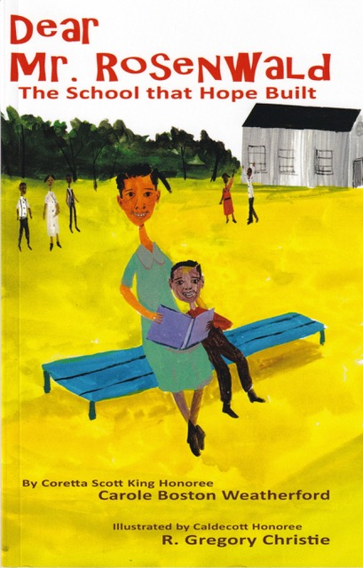
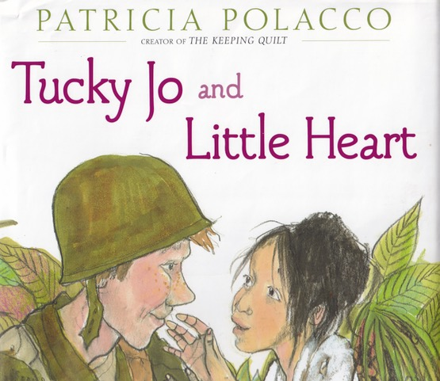
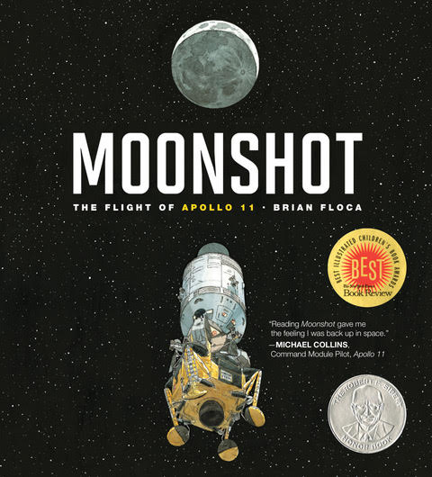
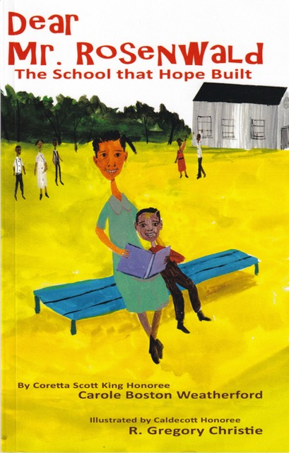
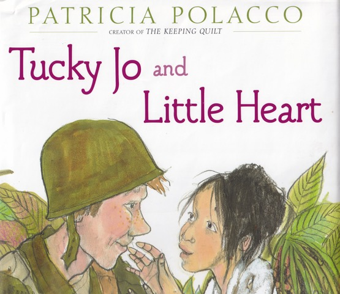
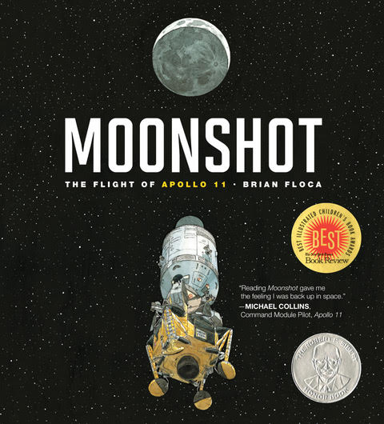
 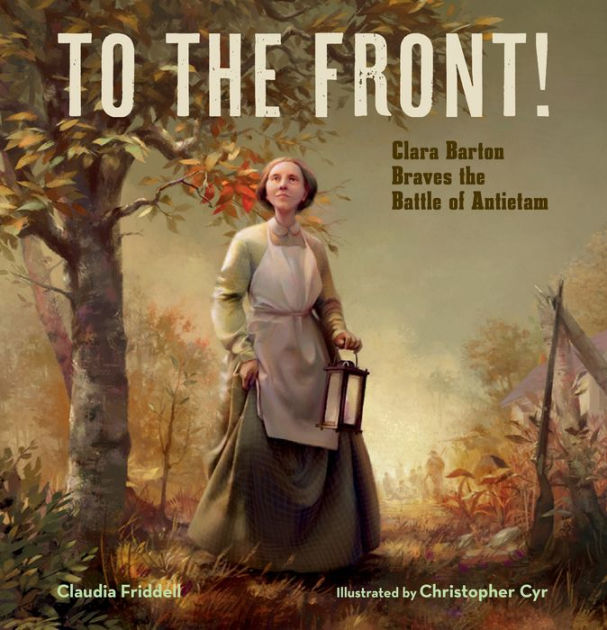
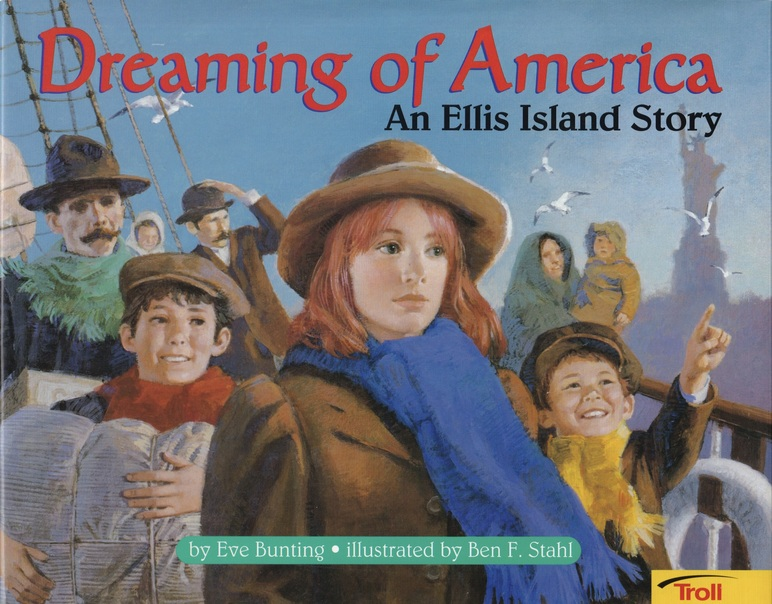
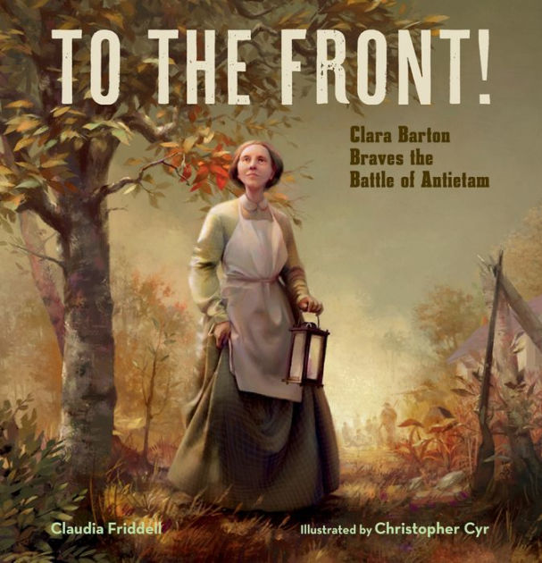
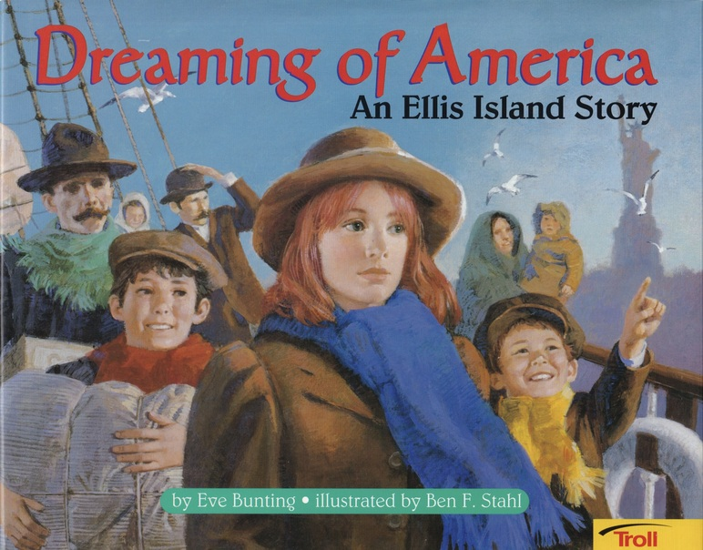
 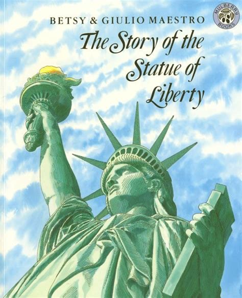
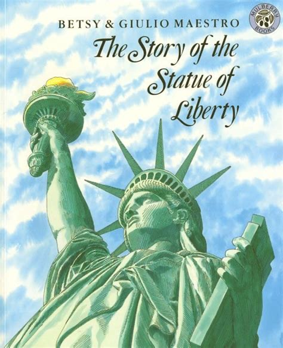
 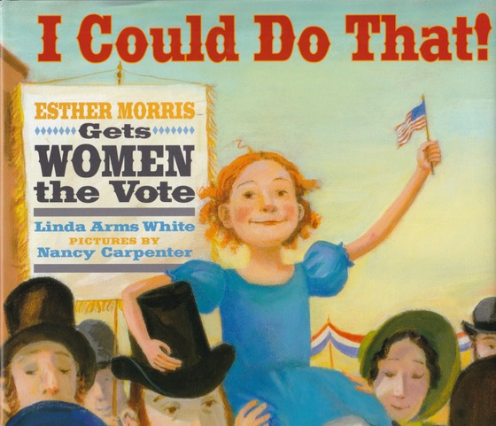
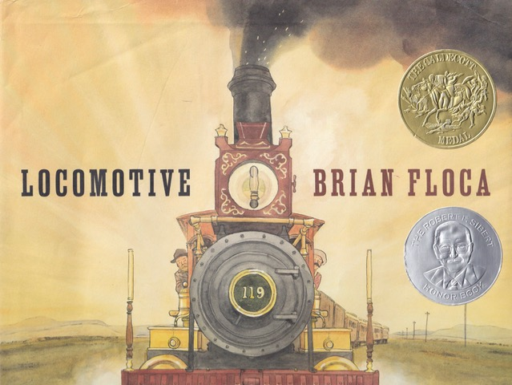
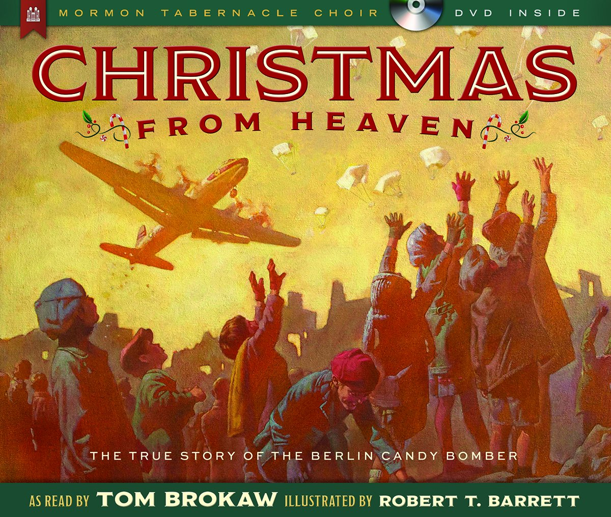
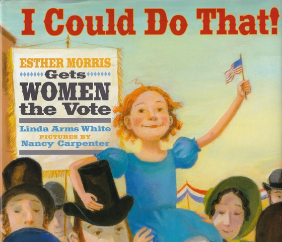
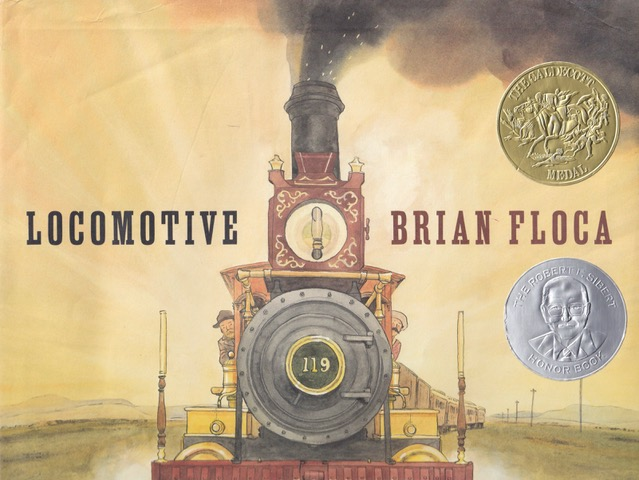
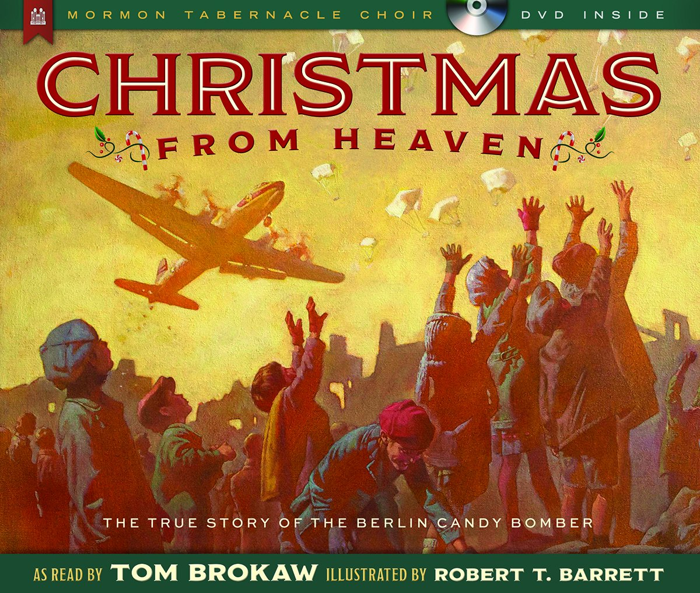